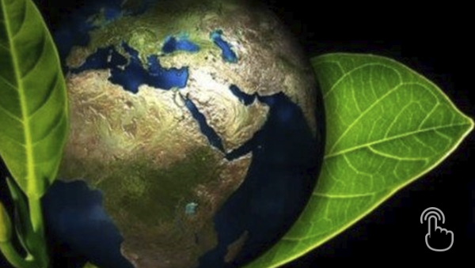
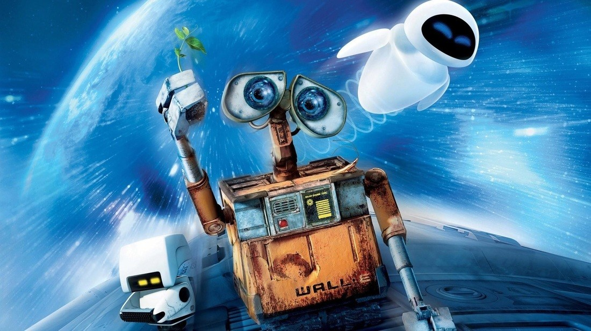

La contaminacion en el cine
¿Cuál es el impacto de la industria del cine en el medio ambiente?
De acuerdo a un informe de la Universidad de Los Ángeles en 2006, la producción de una película produce, en promedio, 500 toneladas de CO2. Con la industria hollywoodense completa generando 15 millones de toneladas de manera anual.
Y ni hablar de cómo esto impacta a las localidades donde se concretan las grabaciones. Está el ejemplo de El Día Después de Mañana (2004), la cual fue dirigida por Roland Emmerich y protagonizada por Jake Gyllenhaal. Y es que causó grandes cantidades de CO2 por los transportes y maquinarias que se emplearon para el rodaje, con la producción promoviendo la reforestación de la zona para compensar los efectos nocivos.
Otro caso fue La Playa (2000), la cual fue dirigida por Danny Boyle, estelarizada por Leonardo Di Caprio y producida por la 20th Century Fox. Y es que se eligió la isla tailandesa de Ko Phi Phi Lee.
Allí se afectó a la localidad, con el equipo de grabación retirando especies autóctonas de la playa e introduciendo otras especies para tomar tomas más atractivas. Lo cual, al ser un Parque Nacional, le valió un juicio por daños medioambientales a Fox.
¿Qué soluciones hay?
Si bien el impacto medioambiental del cine puede sonar inevitable, existen ciertos hábitos que pueden ayudar a disminuir la contaminación. Para ello existen prácticas que promueven un cine más ecológico. Como el uso de decorados desmontables y reciclables, uso de maquillaje veggie o cuyo impacto medioambiental seamínimo, el uso de efectos digitales para el uso de explosiones, etc...

WALL-E y el Ambiente
Por esta razon la pelicula mejor para este caso es la de WALL-E, que nos habla y nos enseña de una forma dulce y divertida sobre el cuidado de nuestro propio planeta, y las concecuencias que conllevaria el no hacerlo.